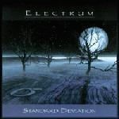

| Artist: | Electrum |
| Title: | Standard Deviation |
| Label: | Net Dot Music NDM2002 |
| Length(s): | 46 minutes |
| Year(s) of release: | 2002 |
| Month of review: | [05/2002] |
| 1) | The Will To Power | 8.42 |
| 2) | Degrees Of Freedom | 5.47 |
| 3) | A Tense Bow...A Moving Target | 3.34 |
| 4) | The Impudent Piece Of Crockery | 4.45 |
| 5) | A Fugue State | 6.50 |
| 6) | Apartment Living | 2.07 |
| 7) | Seven Falls, Eight Rises | 14.34 |
On Degrees Of Freedom the mood is more relaxed with flowing guitar melodies and some nice "piano" playing. The drumming is also quite relaxed on this instrumental ballad. They liken this track to ECM style music, but for that it is a bit too melodic and proggy, although they seem to have struck the right mood. Especially the ending is a bit too active for an ECM release.
A Tense Bow...A Moving Target continues the line of the previous two songs, but is certainly more involved and active than the previous. As the bio states, the song is made out of the leftovers from the first track, and this shortish instrumental is full of variation.
On The Impudent Piece Of Crockery the keyboards, bass and drums go easy at it as this song is dominated by the jazzrock oriented guitar, which meanders throughout. Plenty of signature changes again, but to me the song is a bit too easy-going. When the guitar is there it dominates too much, when it isn't there what is left is too uneventful, too undistinctive. The final part also has guitar, but now more atmospheric. Not a high point.
In the intro to A Fugue State the Rush influences abound. The song consists of a number of widely differing passages including a slow blues part, the mentioned aggressive Rush like part on guitar, a plodding organ part, an orchestral part (with keyboards), an off-beat fluting keyboards part (this is the fugue part) and even some mellotron. Most parts are good, but there is an arbitrarity to it all. One of the guitar lines (in the back) has something of the main melody of Blue Oyster Cult's Don't Fear The Reaper. The song ends climactic.
The track Apartment Living is probably written to scare off your neighbours. Kulju wrote it one night when his various neighbours kept him out their sleep. So if you ever have any neighbours like that, play them this in return, loud. Manic guitars in nineties King Crimson style will scare the wits out of them.
The final track is the fifteen minute epic Seven Falls, Eight Rises. In style, the song can be compared to La Villa Strangiato with rather loud, aggressive guitars, but also some more tension building with some sweeping melodies and ascending repetitive guitar parts. Before we get halfway we get a rather long uneventful passage, but after that we get a nice orchestral passage as reward. Maybe the previous passage was too offset this keyboard dominated part. The music continues to be orchestral until the end, but along the way also includes some less orchestral elements such as a bouncy guitar. The song climaxes at the end, to be put to rest by a short melodic piece of piano.